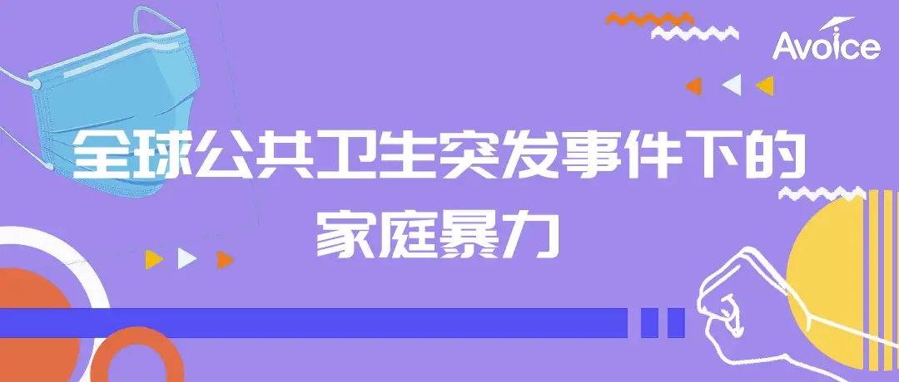
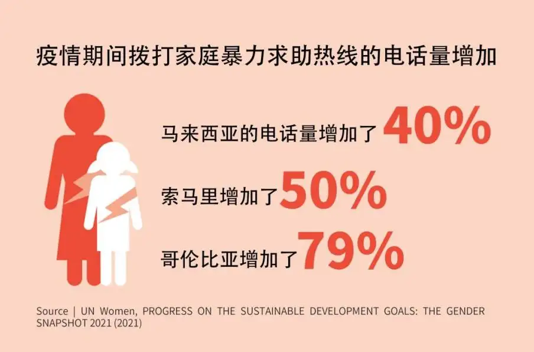
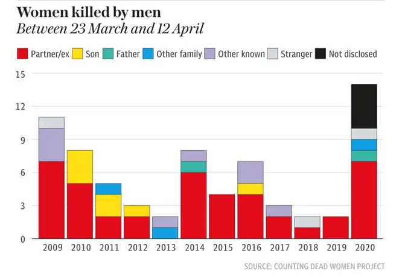
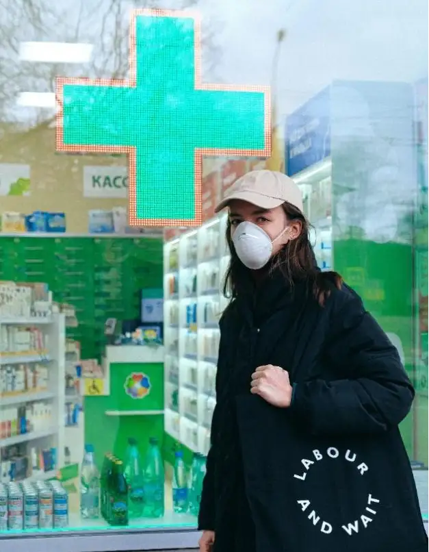
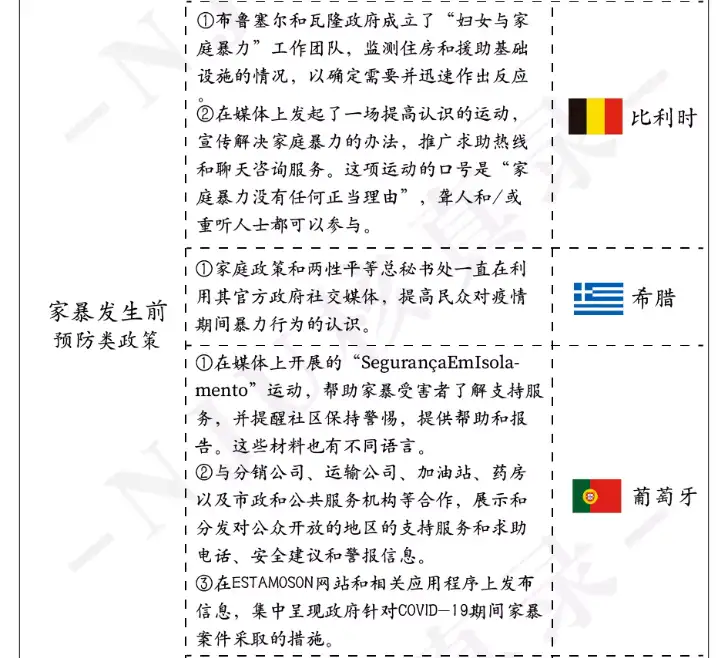

引言：
随着人们逐渐走出抗疫初期的疾风骤雨，新冠疫情带来的长期问题逐渐浮出水面。妇女和女童占据世界人口的近一半，从性别视角分析、思考、总结问题对充分发挥全人类力量、进行可持续发展、建设公平公正的社会过程起到至关重要的作用。目前全球范围内，针对妇女和女童的暴力行为在持续增加。新冠疫情中的居家隔离政策和大规模经济下滑、失业率上升让发生在家庭场域中的暴力更加私人化、去政治化。而这些沉甸甸的数据暴露了我们社会的“不平等”这一事实，同时也提示各个国家救助机构系统上的不完善，更是映衬出解决家庭暴力、消除性别、种族/公民身份和阶级等社会因素交叉导致的社会不平等的紧迫性。因此，本文以新冠疫情为切入点，解析疫情与家庭暴力的联系，探索公共卫生突发事件下女性保护的最优解。

图片来源：联合国妇女署公众号
近日联合国发布了《2022年性别快照》报告，揭示了面对接踵而至的全球危机，例如新冠疫情、气候变化、暴力冲突和人道主义危机，以及女性性健康和生殖健康及权利方面的倒退等情况下，性别之间的差距在如何恶化。依据当前的推进速度，全面实现性别平等仍需近300年的时间。
针对女性的暴力情况是衡量是否达到性别平等目标的重要指标之一。然而报告中指出，在全球范围内，针对妇女和女童的暴力行为在持续增加。在过去一年中，每10名15~49岁的女性中就有1名以上遭受过来自亲密伴侣的身体暴力或性暴力（12.5%），约25%的女性称在疫情期间家庭冲突更为频繁，且女性拨打家庭暴力求助热线的次数急剧增长。 这些触目惊心的数字无疑给我们敲响了警钟，将家庭暴力问题放到疫情这一大环境下进行讨论与分析是必要的，而我们也应当反思、分析疫情中暴露出的问题。面对类似于疫情这样的突发公共卫生事件，究竟应当采取怎样的措施与应对方式，才能真正有效地保护女性免于遭受家庭暴力。
一
全球家庭暴力在疫情的环境中迅速蔓延
自2020年3月17日以来，法国全国家庭暴力案件增加了30%，仅在巴黎就增加了36%。在西班牙，因为家庭暴力拨打紧急求助电话的数量增加了20%，而在巴西则达到了40~50%。除此之外，媒体对家庭虐待和杀人案件的报道也有所增加。在澳大利亚，在线搜索“家暴援助”的点击量增长近75%，达到近五年来的最高水平。加拿大、德国和美国也报告了在疫情期间，对紧急庇护所的需求迅速增加。这些数据都反映了“疫情期间家暴发生率在增加”这一现象。联合国网站指出，由于新冠肺炎疫情大流行，几十年来在性别平等和妇女权利方面取得的有限进展呈现被削弱的趋势。
二
多方因素共同作用，
使疫情成为家庭暴力的导火索
01 压力与风险并行
疫情期间，一方面人们长时间待在家中，家庭成为家庭成员最主要的情感的寄托与发泄口；另一方面，疫情形势下对居民管控的要求更高、难度更大，因而社会管控的方式逐渐转变为以家庭为单位（尽管社会管理主要通过社区化管理来实现，但在每一个社区中，管理的对象还是各个家庭）。家庭已然成为情感发泄的存在，因此当家庭成员感受到来自各方面的压力，会更倾向在家庭内部宣泄压力与情绪，由此引发家庭暴力。而女性和孩童在家庭中处于弱势地位，这不单单指在暴力行为面前的身单力薄，还包括生活资本与生活资料的匮乏，以及在应对各种风险时较低的抗风险能力，这样的弱势地位很大程度上归因于他们当前边缘化的社会性角色，使得其自身价值更容易被家庭所禁锢。
02 经济遭遇重创，更多女性失去了工作
疫情之下，就业形势严峻，失业率激增，社会压力与家庭地位分化加剧：英国一家慈善组织的主管雅各布(Jacob)表示，失业不仅会让女性更易遭受虐待，还使得她们在疫情后更易长期遭受家暴 。根据英国家暴慈善机构“Shelter”的数据显示，英国自实行封控政策以来，家暴求助电话增加了25%，网站的访问量增加了150%。在封控三个星期后，这个数字比正常水平高出49%。甚至在封锁的前三个星期，发生了至少16起针对妇女和儿童的家庭暴力杀人事件。亚裔家暴力支援团体纽约励馨妇幼关怀中心总干事刘元芬表示，2020年由于受到新冠肺炎疫情影响，华人家庭暴力个案明显上升，从三月纽约市“居家避疫”令以來，每月向励馨求助的家暴由数十宗，激增到三百多宗，是去年同期的数倍。
在全球经济萧条与生活资料紧张的大环境下，作为经济来源与力量上的弱势方，失业女性在家庭中的地位与话语权进一步丧失，在遭受暴力虐待之后更加无力反抗。

图源：COUNTING DEAD WOMAN PROJECT
03 居家隔离政策下，受害者求助无门
自居家隔离令实行以来，法国家暴受害者求救电话3919专线接到的求助电话数目减少，法国性别平等事务国务秘书玛琳·席亚帕(Marlene Schiappa)坦承，“当你和加害者一起关在一间屋子里时，你很难打电话”。一些国家的慈善机构也说，家暴热线拨打数量反而降低，因为女性更难有机会打电话求助。家暴幸存者安娜·贝拉·埃斯特韦斯(Anna Bella Esteves)在西班牙南部运营一个支援服务机构，称“与女性通电话有困难，因为她们的施暴者一天24小时徘徊在侧”。
04 社会资源受限，援助机构力不从心
受害者躲避危险最直接的办法是去庇护所。但在疫情之下，各国庇护所的情况也很艰难。美国西雅图市最大庇护所负责人说，该市首次发现新冠肺炎确诊病例前，收容所已基本满员，现在他们每天还要接纳大约25个新家庭。该庇护所通常有200至300名志愿者维持运转。由于疫情冲击，庇护所需要更多人手对设施定期消毒、并筛查出入人员，但如今几乎没有志愿者前来。美国华盛顿大学社会工作学院负责多元化、平等及包容的副院长瓦尔·卡莱·卡努哈(Val Kalei Kanuha)表示，“对于那些想要伤害伴侣的人来说，这是一个完美的时机”，因为即使在新冠肺炎疫情扩散之前，家庭暴力的施害者就经常试图将受害者隔离起来，以对他们施以肉体和心理上的控制，现在居家隔离为施暴者提供了完美的施暴时间和空间条件，那些可能遭到家暴的人已无处可逃。卡努哈指出，“在疫情期间，即使受害者想要离开施暴者，也是很困难的一件事，因为他们没有地方可以去”。
三
迅速应对的新型援助方式
01 政府加大投资，提供坚实保障
法国政府把家庭暴力受害者安置在酒店并支付相关费用，还将开放短期咨询中心。政府还宣布为反家庭虐待组织追加100万欧元补助，以帮助这些组织应对日益增长的服务需求。在澳大利亚，虽然目前法庭停止运营，但对紧急重大案件，仍然通过视频审理。如果家暴造成非常重大的伤害，法庭一定会发出命令对加害人进行控制。同时，政府投入了1.5亿澳元用于疫情期间家庭暴力援助。新南威尔士州投入3400万澳元为家暴受害者提供临时住宿，以帮助受害人临时离开施害环境。
02 随机应变，设立应急求助系统
疫情期间，遭遇家庭暴力的女性面临的一个很严峻的问题便是在国家实施封控管理的大背景下，其外出活动受到限制，导致相关的支持系统很难真正地惠及女性。而超市与药店等公共场所为了维持人们的基本生理需求仍在开放，也成为了连结求助者与援助组织或政府机构之间重要的桥梁。

图源：Pexels
在一些欧洲国家，如法国、英国、意大利、荷兰和西班牙已出台相关政策，在女性无法公开讨论家暴案件时，她们可以前往药店，对工作人员说出指定的暗号“Mask 19”或“ANI (Action Needed) ”，在不引起注意的情况下寻求帮助，当工作人员听到相关暗语会立刻意识到该名女性处于暴力状态，并立即代表女性与警察局或社会服务机构联系。
家庭暴力不单纯是家庭的内部矛盾，更是一个严重的社会问题。全社会的参与并给予系统性的支持网络，是帮助遭遇家暴的女性走出困境的关键因素。尽管这项应急预警系统是在疫情大背景下出现的应急措施，我们仍旧希望未来越来越多的如连锁餐厅、超市等社会机构能够利用其在时间、空间与人员上的优势，与家庭暴力援助组织之间建立伙伴关系，成为家庭暴力受害者的潜在支持地点，为她们提供更多获取资源的途径。
03 在线求助，扩大受害者获取帮助的途径
在疫情之前，拨打家庭暴力热线或到庇护所进行求助对于受害者而言通常是最便捷途径，然而在疫情期间封控管理政策、隔离政策等复杂背景下，援助机构逐渐意识到，遭受家庭暴力的女性通过电话寻求帮助的机会窗口变得非常小。
“许多女性在电话接通后便窃窃私语，以防被在隔壁的伴侣听到”。
面对这样的困境，一些援助服务的提供者迅速应对不断变化的情况，建立或者扩大相对电话而言更加隐蔽的在线求助服务，而受害者也可以通过线上聊天、短信等形式积极地向援助机构寻求帮助。针对电话求助难的问题，巴西政府推出投诉APP。新推出的应用程序被命名为“人权BR”，安卓系统和IOS系统均可使用。在进行简单注册后，举报者可投诉针对女性、儿童、老年人或其他社会群体的暴力行为。投诉中还可附上照片或视频等内容。除此之外，现在我们可以看到在疫情的大背景下，逐渐发展出了一些新媒体视域下的新型援助方式，如包含在线咨询、救助金申请、自评亲密关系危险性等功能的“家暴求助”小程序或者涵盖心理、法律援助、医疗资源等多维度支持的线上女性保护项目等等，应用更便捷的途径，通过更全面的功能，帮助遭受家庭暴力的女性更快地接受到帮助。
四
在问题中反思，在反思中寻找答案
01 关注边缘群体，提供针对性帮助
“我服务的对象大部分都是移民、酷儿或者跨性别者，疫情导致社会上大多数人面对面互动的机会大幅度减少，而对于这些特殊群体而言，她们接受到的本就不多的社会支持在这种情况下变得越来越少，这也使她们寻求帮助的道路变得愈发地艰难。”这段纽约家庭暴力援助机构负责人的采访，让我们把视角聚焦到边缘群体在疫情中面临的求助困境。
一项来自挪威的调查研究也显示，在公共网站上几乎全部用挪威语发布有关家庭暴力援助服务的信息，而全国家庭暴力热线除了挪威语和及其不易被找到的英语两种语言外，不再提供其他语言的信息支持。这种情况导致了许多移民女性无法获取到有效的信息，她们甚至不知道即使在封锁期间，包括庇护所在内的社会援助机构仍然能够为遭受家庭暴力的女性提供帮助。
疫情危机暴露了家庭暴力受害者支持系统的根本弱点——不平等。在缺乏对变化中的社会环境的思考下，同质化的视角与措施，会在一定程度上边缘化弱势群体和少数族裔，使其深陷家庭暴力的漩涡，却找不到出路。
因此我们希望在各国（地区）政府部门制定保护政策的时候，在援助机构提供相关支持措施的时候，能够将视角聚焦于包括残疾人、少数族裔、移民等群体，考虑这些人群遭受暴力形式的特殊性，分析其终止暴力所面临的障碍，了解其真实需求，提供针对性的帮助。
02 多方合作，扩大援助服务资源可用性与多样性
家庭暴力受害者在寻求帮助的过程中遇到最大的阻碍，往往是不知道向谁求助，以及相关援助机构具体能从哪方面为自己提供帮助。而这种在获取援助资源或信息方面的困境，因为疫情的出现愈演愈烈。疫情期间，原有的生活节奏被打乱，由于政策的限制导致人与人之间无法进行面对面沟通，因此很多受害者并不清楚援助机构是否还在正常运营，可提供的援助资源是否和原来一致。
为了解决这个问题，许多援助机构引入创新性的策略，积极寻求多方合作，加强宣传。一位来自佛罗里达的家暴援助机构负责人解释道：“我们花了很多时间与当地媒体和社交媒体进行联系，同时还在社交平台上进行网络直播，就是为了让更多人知道我们的机构在疫情期间仍然正常开放，打来的求助电话仍然有工作人员来接听，也可以为他们提供庇护所。”
本次疫情暴露出的问题应当使我们意识到，让家庭暴力受害者明确可用资源是必要且重要的，因此对于家庭暴力援助资源的提供者而言，可以尝试与其他社会组织寻求合作，同时在社交媒体或应用网络平台进行积极地进行宣传，以提高家庭暴力受害者对可求助资源的了解，使她们不管在什么时候遭遇家庭暴力，哪怕是在疫情这样的突发事件下，都能第一时间找到获取帮助的途径。
03 总结经验，完善突发性公共事件下的支持系统
联合国开发计划署（UNDP）和联合国妇女署（UN WOMEN）基于各国（地区）的政府文件、媒体报道和现有的政策存储库，统计了各国（地区）政府应对COVID -19的性别敏感措施，并以数据库的形式发布在联合国开发计划署下属的COVID -19社会经济复苏数据洞察平台上。联合国开发计划署和联合国妇女署将“性别敏感措施”定义为“直接应对COVID -19危机期间妇女和女童面临的风险和挑战的措施，特别是对妇女和女童的暴力行为、无薪护理工作和经济不安全等。”通过这一数据库对各国（地区）在疫情期间针对家暴采取的特殊措施进行了进一步的统计和梳理，发现疫情期间针对家暴事件全球政府共采取704项不同措施。数据库完整地向我们展示了本次疫情积累下的针对家庭暴力的经验，从中进行总结，尽快形成形成一套完整的应急预案及支持系统，以应对突发性公共事件的背景下的家庭暴力问题，帮助受害者走出困境。具体措施（节选）如下图。

图源：核真录
五
结语
新冠疫情暴露了性别不平等这一结构性问题，而在这场社会公共卫生事件中，妇女及儿童是最容易受到伤害、最容易被忽视的群体，且最容易被忽视的群体。疫情后层出不穷的暴力事件给所有人敲响了警钟，若不及时采取行动，几代人为妇女及女童实现的进展将因新冠疫情而付之东流，若不对本次疫情暴露出的问题进行反思及总结，我们只会离性别平等的目标越来越远。因此呼吁全球范围内能够增加对突发公共卫生事件下“针对女性的暴力”这一问题的关注，在政府、社会、媒体的帮助下，帮助受到伤害的女性走出阴霾。
作者 | 吉雅昕、Jacqueline、思宇
审校 | 董智
排版 | 官晓娜